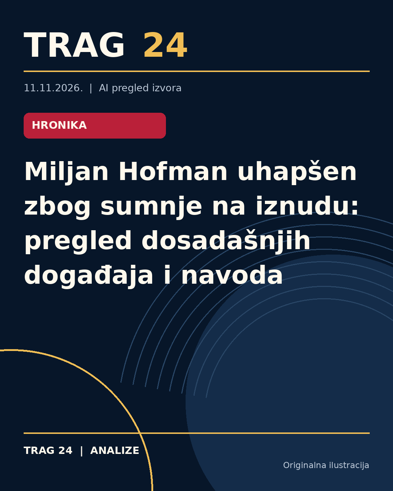

Miljan Hofman uhapšen zbog sumnje na iznudu: pregled dosadašnjih događaja i navoda

ŠTA SE DOGODILO
Miljan Vidović, poznatiji kao Miljan Hofman, uhapšen je u Beogradu po nalogu Prvog osnovnog javnog tužilaštva zbog sumnje da je počinio krivično delo iznude nad jednim beogradskim privrednikom. Hapšenje je izvršeno dok je doručkovao u restoranu brze hrane. Narednih 48 sati zadržan je radi saslušanja.
HRONOLOGIJA
Hofman je u novembru 2023. godine uhapšen zajedno sa bratom Ljubanom u tržnom centru u Beogradu, nakon objave video-snimaka na društvenim mrežama na kojima maltretiraju zaposlene u ugostiteljskim objektima. U februaru 2024. godine osuđen je na deset meseci kućnog zatvora zbog zlostavljanja i mučenja radnika u vinariji u Irigu, što je pravdao da je bila ‘’gluma i skeč za društvene mreže’’. U avgustu 2025. godine ponovo je priveden zbog sumnje u ugrožavanje sigurnosti, koje je povezano sa nasilnim događajima u stambeno-poslovnom kompleksu na Novom Beogradu. Njegova povezanost sa poznatim ličnostima iz muzičkog sveta i političkom scenom dodatno je ispitivana u medijima.
ŠTA NAVODE IZVORI
Svi izvori potvrđuju hapšenje Miljana Hofmana zbog sumnje na iznudu. Izvor Kurir i Blic detaljno navode prošlost osumnjičenog, uključujući njegove ranije krivične prijave, osude, kao i brojne video-zapise nasilničkog ponašanja. Izvor Danas naglašava njegovu povezanost sa političkim skupovima i pojavama u politici, kao i prošle optužnice zbog nasilja. Takođe se pominje da je on javno poznat po nadimku Hofman i po bratu Ljubanu.
ŠTA JE POTVRĐENO
Potvrđeno je da je Miljan Hofman uhapšen i zadržan zbog sumnje na iznudu. Takođe su potvrđene prethodne osude i hapšenja u vezi sa nasiljem nad konobarima, dostavljačima hrane i oštećenim licima, kao i posebno suđenje u Osnovnom sudu u Rumi. Postoje javno dostupni snimci na kojima se vidi njegovo nasilno ponašanje. Potvrđene su i informacije o njegovim odnosima sa pojedinim poznatim ličnostima iz muzičkog i društvenog života.
ŠTA NIJE POTVRĐENO
Nije potvrđeno da je sva nasilja o kojima se govori bila deo insceniranih skečeva, kako sam Hofman tvrdi, niti su do sada pravosudno ocenjivane sumnje vezane za njegov politički angažman ili ulogu na skupovima. Takođe ne postoje potvrđene informacije o ishodu najnovijih okolnosti hapšenja povodom sumnje na reketiranje privrednika.
ŠTA OSTАJE OTVORENO: Ostaje otvoreno pitanje ishodа istrage i procesuiranja vezano za najnoviju sumnju na iznudu privrednika. Takođe je nepoznato na koji način će njegov raniji dosije i optužbe uticati na sudski postupak. Nije jasno kako će se razjasniti njegova tvrdnja o „skečevima“ u odnosu na dokaze o nasilju. Ostaje i pitanje daljeg uticaja njegovih društvenih i političkih veza na slučaj.
Izvori
- https://www.kurir.rs/crna-hronika/10159579/evo-ko-je-miljan-hofman-uhapsen-zbog-reketiranja
- https://www.danas.rs/vesti/drustvo/uhapsen-miljan-hofman-osumnjicen-za-iznudu/
- https://www.blic.rs/vesti/hronika/ko-je-uhapseni-miljan-hofman-vidovic/3m1p45p
Ova analiza je pripremljena uz pomoć veštačke inteligencije na osnovu javno dostupnih izvora. Navodi izvora nisu nužno nezavisno potvrđeni.